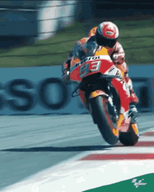

Inicio
🏍️ Bienvenido a la emoción del MotoGP 🏆 Desde la velocidad extrema hasta las leyendas que han conquistado la pista, aquí encontrarás todo sobre el MotoGP. Descubre la historia de este deporte electrizante, los campeones que han dejado huella en cada curva y las motos más rápidas y avanzadas de la competición. Revive momentos icónicos, conoce los pilotos más emblemáticos y explora cada detalle de las máquinas que dominan el circuito. Si la adrenalina y la velocidad son tu pasión, ¡este es tu lugar! ⚡ Prepárate para acelerar y vivir la emoción del MotoGP como nunca antes. 🏁
Historia

El MotoGP es la máxima categoría del Campeonato Mundial de Motociclismo, organizado por la Federación Internacional de Motociclismo (FIM). Su historia se remonta a 1949.
En 2002 la categoría reina pasó a llamarse MotoGP, permitiendo motores de 990cc. En 2012 se incrementó a 1000cc alcanzando velocidades récord.
Marcas como Honda, Yamaha, Ducati y Suzuki, y pilotos como Rossi y Márquez han definido la historia del MotoGP.